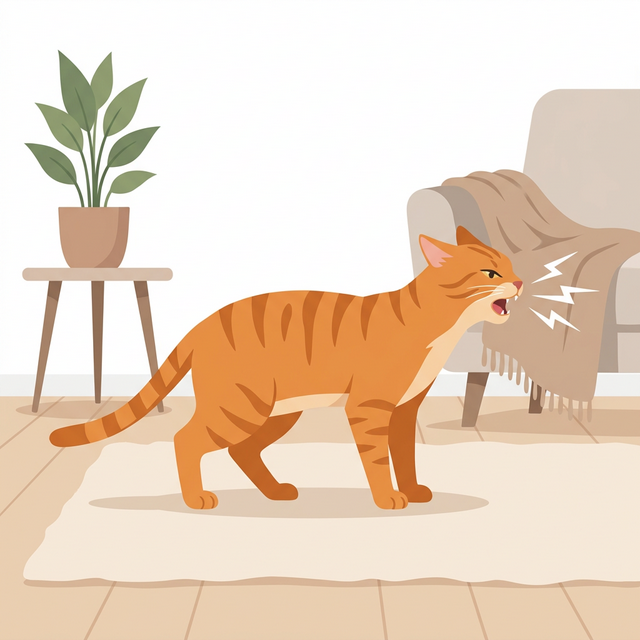

猫が咳のとき、ご家族としては非常に心配になるかと思います。ここでは、考えられる原因と、獣医師に的確に状況を伝えるためのチェックポイントを解説します。
猫の咳は、喉に何かが詰まったような「カッカッ」という音や、乾いた音、湿った音など様々です。
猫や猫の咳は、飼い主からは「ケホケホする」「ゼーゼーする」「ヒューヒュー音がする」といった呼吸音として気づかれることがあります。
呼吸器系の感染症（気管支炎など）、心臓病、アレルギー、異物の誤飲など。
咳の音の様子、咳が出るタイミング（興奮時、朝晩など）、呼吸は苦しそうか、運動を嫌がるか。
ここまでの内容をもとに、症状を整理して受診用レポートを作れます。入力が難しい場合は、以下のツールを使ってください。
このページは、動物病院での診察時に症状を整理して伝えやすくすることを目的として作成されています。
実際の診断や治療は獣医師による診察が必要です。
気になる症状がある場合は早めに動物病院へご相談ください。
他の症状も確認できます
症状一覧を見る監修
獣医師資格保有者による情報整理ツール
本サイトは診断を行うものではなく
受診前に症状を整理する目的で作られています。
体調に異常がある場合は
必ず動物病院での診察を受けてください。